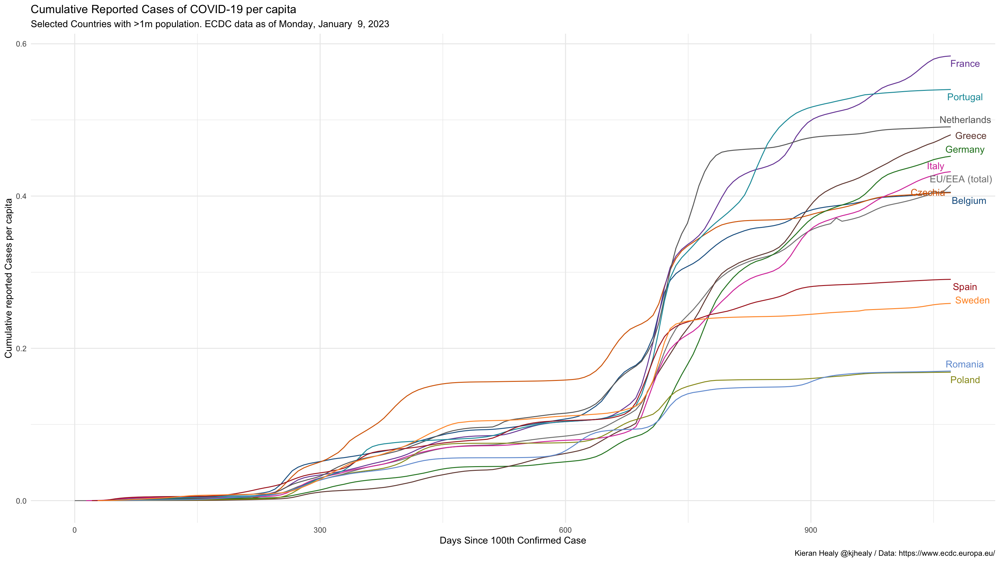

library(covdata)
#>
#> Attaching package: 'covdata'
#> The following object is masked from 'package:datasets':
#>
#> uspop
library(tidyverse)
#> ── Attaching packages ─────────────────────────────────────── tidyverse 1.3.0 ──
#> ✔ ggplot2 3.3.2 ✔ purrr 0.3.4
#> ✔ tibble 3.0.4 ✔ dplyr 1.0.2
#> ✔ tidyr 1.1.2 ✔ stringr 1.4.0
#> ✔ readr 1.4.0 ✔ forcats 0.5.0
#> ── Conflicts ────────────────────────────────────────── tidyverse_conflicts() ──
#> ✖ dplyr::filter() masks stats::filter()
#> ✖ dplyr::lag() masks stats::lag()
covnat
#> # A tibble: 54,162 x 8
#> # Groups: iso3 [212]
#> date cname iso3 cases deaths pop cu_cases cu_deaths
#> <date> <chr> <chr> <dbl> <dbl> <dbl> <dbl> <dbl>
#> 1 2019-12-31 Afghanistan AFG 0 0 38041757 0 0
#> 2 2019-12-31 Algeria DZA 0 0 43053054 0 0
#> 3 2019-12-31 Armenia ARM 0 0 2957728 0 0
#> 4 2019-12-31 Australia AUS 0 0 25203200 0 0
#> 5 2019-12-31 Austria AUT 0 0 8858775 0 0
#> 6 2019-12-31 Azerbaijan AZE 0 0 10047719 0 0
#> 7 2019-12-31 Bahrain BHR 0 0 1641164 0 0
#> 8 2019-12-31 Belarus BLR 0 0 9452409 0 0
#> 9 2019-12-31 Belgium BEL 0 0 11455519 0 0
#> 10 2019-12-31 Brazil BRA 0 0 211049519 0 0
#> # … with 54,152 more rows
## Libraries for the graphs
library(ggrepel)
## Convenince "Not in" operator
"%nin%" <- function(x, y) {
return( !(x %in% y) )
}
## Countries to highlight
focus_on <- covnat %>%
filter(cu_cases > 99, pop > 1e7) %>%
mutate(rate = cu_cases / pop) %>%
summarize(mean_rate = mean(rate, na.rm = TRUE)) %>%
slice_max(n = 20, order_by = mean_rate) %>%
pull(iso3)
#> `summarise()` ungrouping output (override with `.groups` argument)
## Colors
cgroup_cols <- c("#195F90FF", "#D76500FF", "#238023FF", "#AB1F20FF", "#7747A3FF",
"#70453CFF", "#D73EA8FF", "#666666FF", "#96971BFF", "#1298A6FF",
"#6F9BD6FF", "#FF952DFF", "#195F90FF", "#D76500FF", "#238023FF",
"#70453CFF", "#D73EA8FF", "#666666FF", "#96971BFF", "#1298A6FF",
"gray70")
covnat %>%
filter(cu_cases > 99, pop > 1e7) %>%
mutate(rate = cu_cases / pop) %>%
mutate(days_elapsed = date - min(date),
end_label = ifelse(date == max(date), cname, NA),
end_label = recode(end_label, `United States` = "USA",
`Bolivia, Plurinational State of` = "Bolivia",
`Russian Federation` = "Russia",
`Dominican Republic` = "Dominican Rep.",
`Iran, Islamic Republic of` = "Iran",
`Korea, Republic of` = "South Korea",
`United Kingdom` = "UK"),
cname = recode(cname, `United States` = "USA",
`Iran, Islamic Republic of` = "Iran",
`Korea, Republic of` = "South Korea",
`United Kingdom` = "UK"),
end_label = case_when(iso3 %in% focus_on ~ end_label,
TRUE ~ NA_character_),
cgroup = case_when(iso3 %in% focus_on ~ iso3,
TRUE ~ "ZZOTHER")) %>%
ggplot(mapping = aes(x = days_elapsed, y = cu_cases / pop,
color = cgroup, label = end_label,
group = cname)) +
geom_line(size = 0.5) +
geom_text_repel(nudge_x = 0.75,
segment.color = NA) +
guides(color = FALSE) +
scale_color_manual(values = cgroup_cols) +
labs(x = "Days Since 100th Confirmed Case",
y = "Cumulative reported Cases per capita",
title = "Cumulative Reported Cases of COVID-19 per capita",
subtitle = paste("Selected Countries with >1m population. ECDC data as of", format(max(covnat$date), "%A, %B %e, %Y")),
caption = "Kieran Healy @kjhealy / Data: https://www.ecdc.europa.eu/") +
theme_minimal()
#> Don't know how to automatically pick scale for object of type difftime. Defaulting to continuous.
#> Warning: Removed 20178 rows containing missing values (geom_text_repel).
covnat %>%
mutate(cname = recode(cname, `United States` = "USA",
`Bolivia, Plurinational State of` = "Bolivia",
`Iran, Islamic Republic of` = "Iran",
`Korea, Republic of` = "South Korea",
`United Kingdom` = "UK"),
cgroup = case_when(iso3 %in% focus_on ~ iso3,
TRUE ~ "ZZOTHER")) %>%
mutate(cases7 = slider::slide_dbl((deaths/pop)*1e6, mean, .before = 7, .after = 0, na.rm = TRUE),
deaths7 = slider::slide_dbl((deaths/pop)*1e6, mean, .before = 7, .after = 0, na.rm = TRUE)) %>%
filter(iso3 %in% focus_on) %>%
ggplot(mapping = aes(x = date, y = deaths7)) +
geom_line(size = 0.5) +
# scale_y_continuous(labels = scales::comma_format(accuracy = 1)) +
facet_wrap(~ cname) +
labs(x = "Date",
y = "Deaths per Million Population (Seven Day Rolling Average)",
title = "Deaths from COVID-19, Selected Countries",
subtitle = paste("ECDC data as of", format(max(covnat$date), "%A, %B %e, %Y")),
caption = "Kieran Healy @kjhealy / Data: https://www.ecdc.europa.eu/") +
theme_minimal()
Note the effects of reporting issues in various countries.